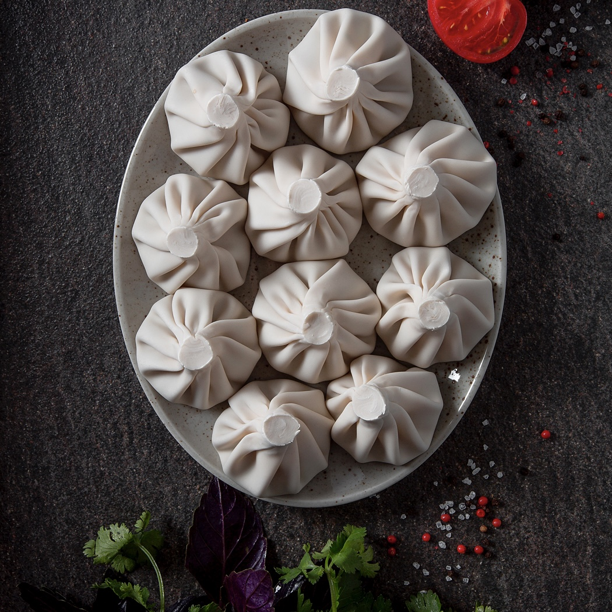

ხინკალი — ქართული ცომის გუფთა. შედგება ღორისა და საქონლის (ან ცხვრის) ხორცის ნარევისგან. წარმოადგენს ცომისგან დამზადებულ ერთგვარ ტომარას, რომელშიც მოთავსებულია გატარებული ხორცი. მზადდება ხარშვის წესით.

ხინკალი